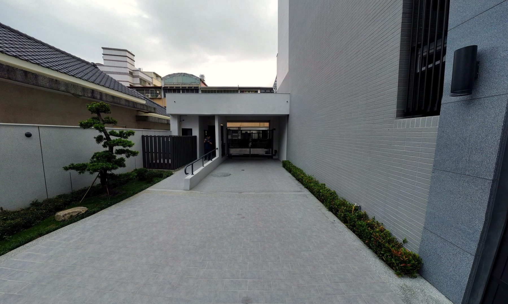
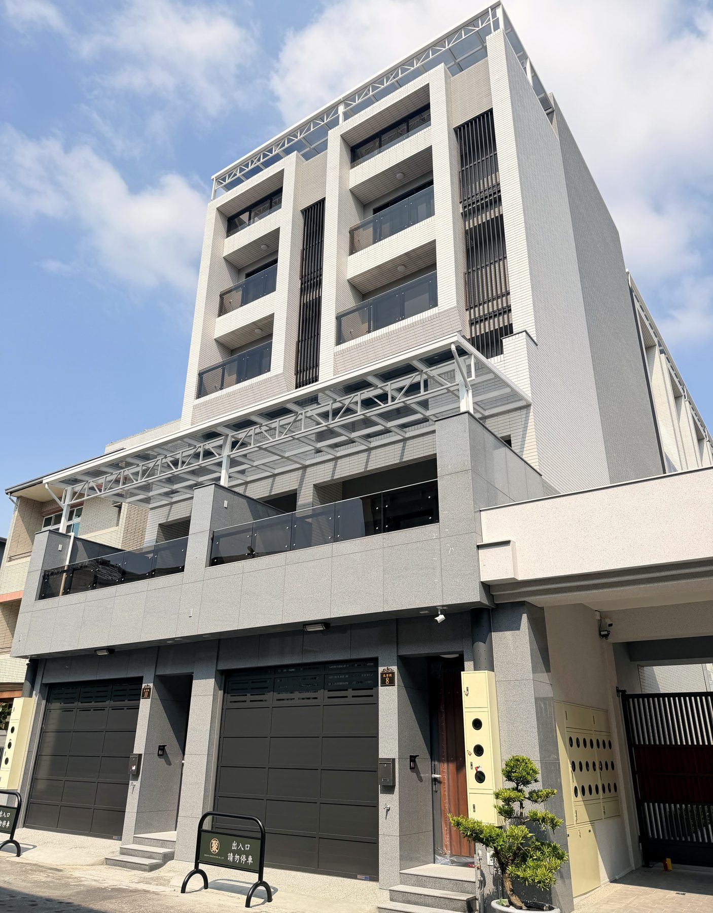

作品 01｜台中市北屯區北安街
聚社區
電梯透天別墅，全新完工。
太原車站走路約 3 分鐘。



以上皆為實景拍攝
目前在售
店鋪 2 戶・住宅 2 戶
價格歡迎洽詢。
臨 10 米路｜店鋪・可開業
10 號
地坪約 33 坪・建坪約 100 坪
臨 10 米路｜店鋪・可開業
8 號
地坪約 25 坪・建坪約 100 坪
社區內｜住宅
6-3 號
地坪約 42 坪・建坪約 113 坪
社區內｜住宅
2-1 號
地坪約 40 坪・建坪約 112 坪
- 格局
- 5 房 6 衛（含 3 間套房）
- 樓層
- 地上 5 層＋屋突
- 車位
- 一樓平面雙車位
- 設備
- 電梯・電動車充電樁
位置
離車站近，離家人也近。
太原車站步行約 3 分鐘｜高鐵台中站搭台鐵約 15 分鐘｜學區：北屯國小・三光國中

完整規格
- 面寬
- 約 6 米
- 電梯
- 永大電梯
- 衛浴
- TOTO
- 建材
- 花崗岩
- 建築設計
- 嵐建築師事務所
生活機能
- 74 快速道路
- 開車約 7 分鐘
- 臺中市立老人復健綜合醫院（中國醫藥大學經營）
- 開車約 10 分鐘
- Costco 北台中店
- 開車約 10 分鐘
- 漢神洲際百貨
- 開車約 15 分鐘
- 商圈
- 太原路・昌平路・北屯路
常見問題
- 是新成屋嗎？
- 是。聚社區已全新完工，可以預約直接看實屋。
- 有電動車充電樁嗎？
- 有。聚社區設有電動車充電樁，一樓為平面雙車位。
- 店面可以做生意嗎？
- 臨 10 米路的 8 號、10 號為店鋪，可開業，適合店住合一。
- 學區是哪裡？
- 北屯國小、三光國中（北興里全里劃入學區）。
- 價格多少？
- 價格歡迎洽詢，請用 LINE 聯絡：tim0108。